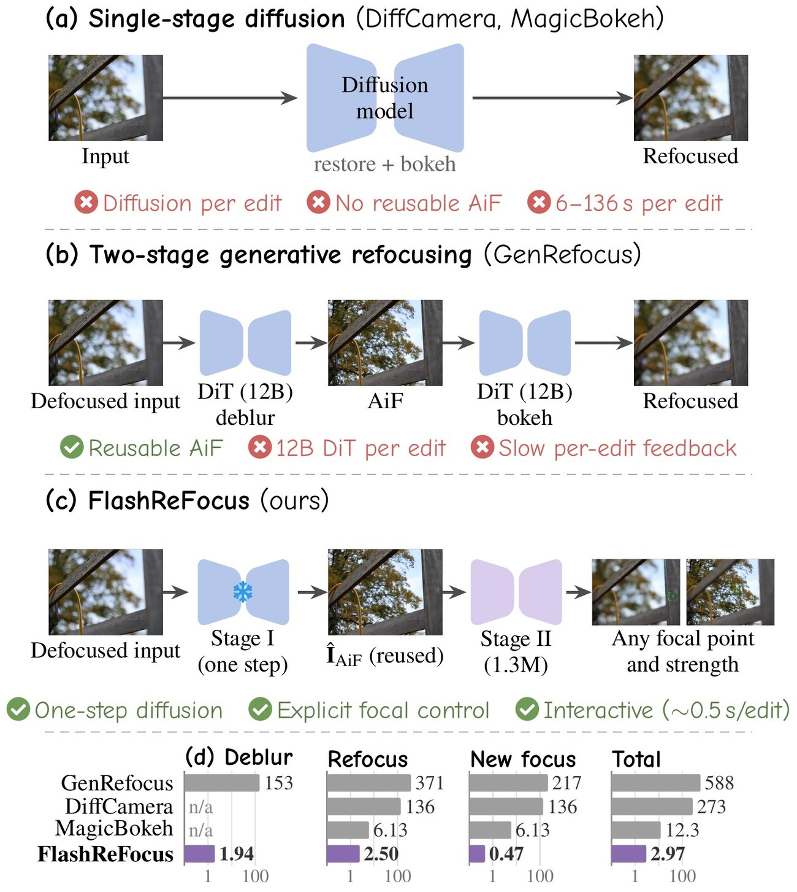
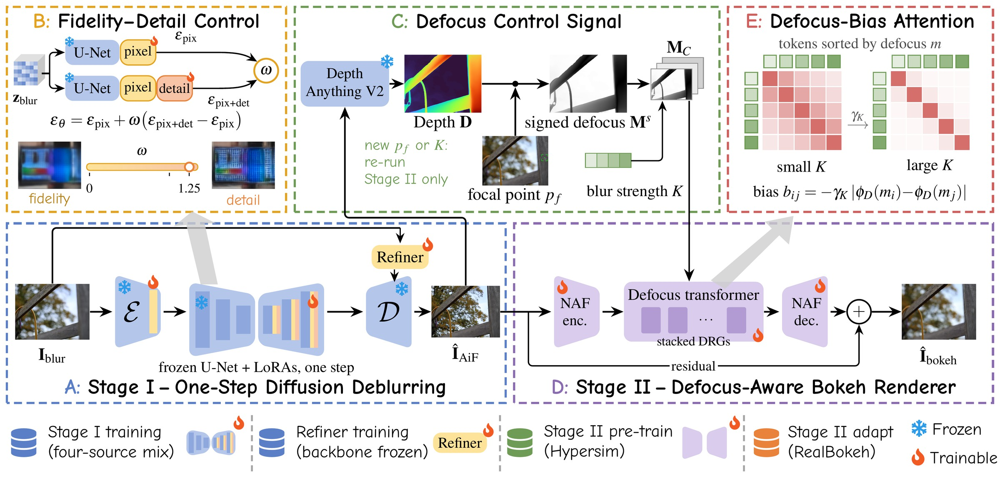
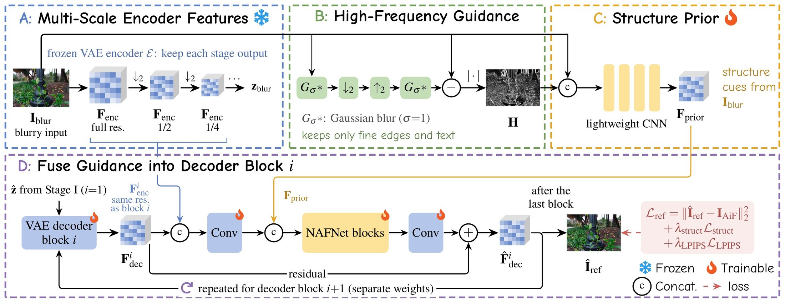
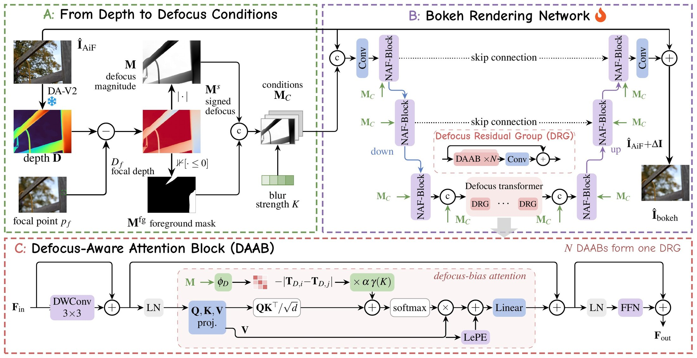
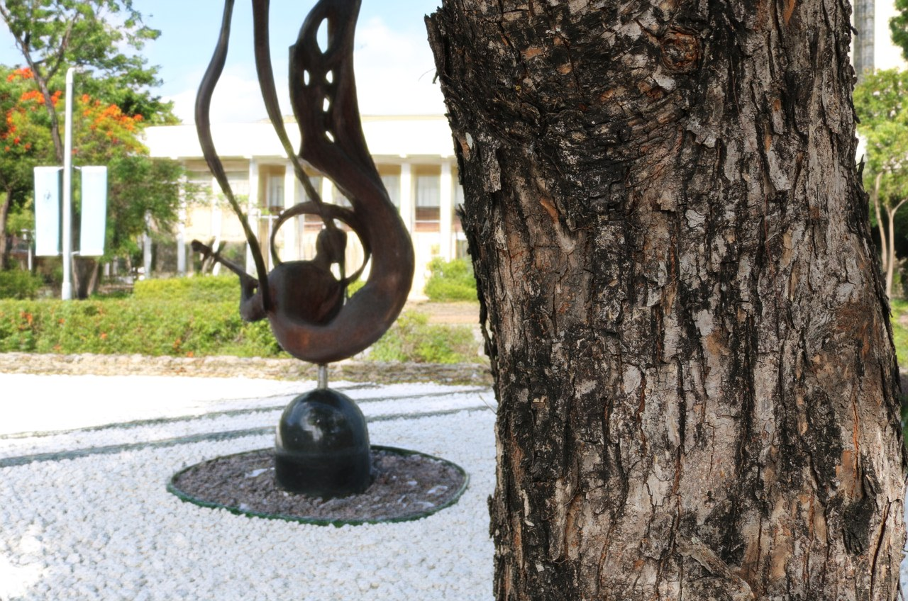
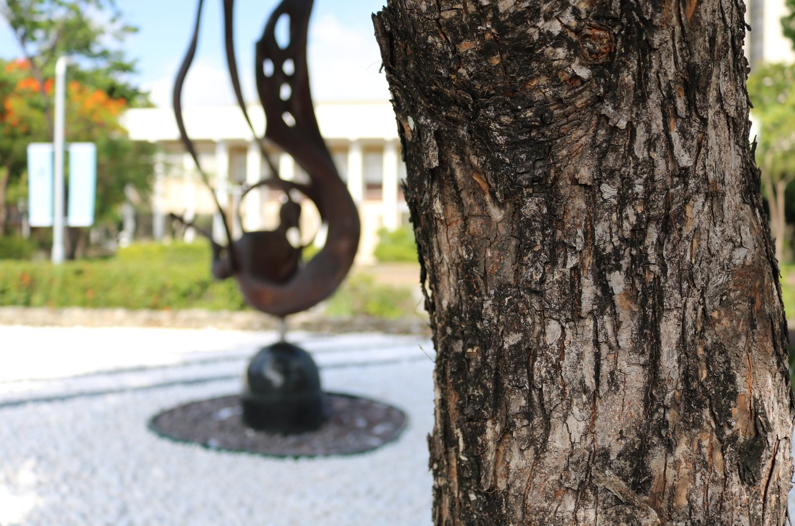
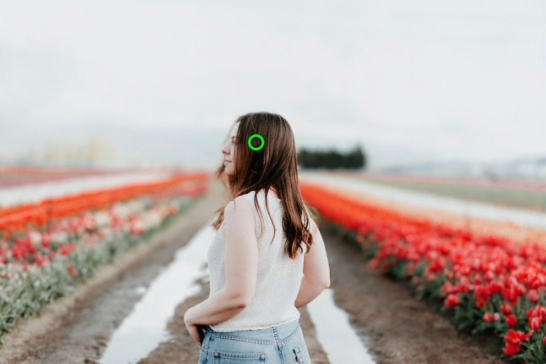
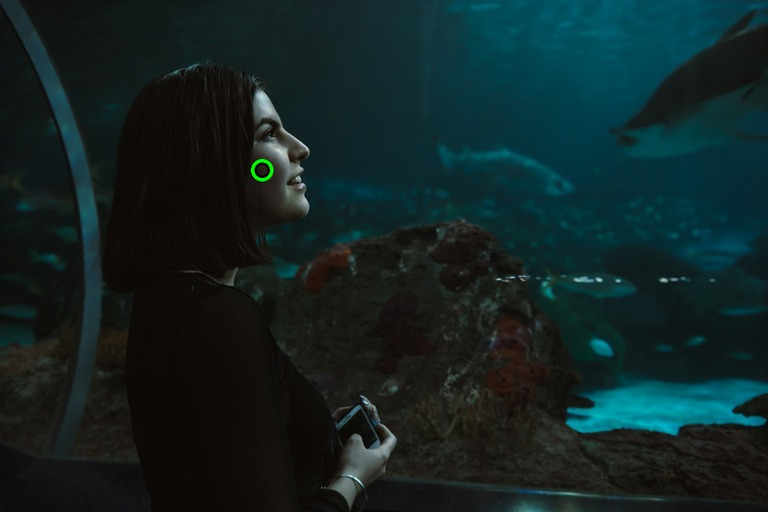
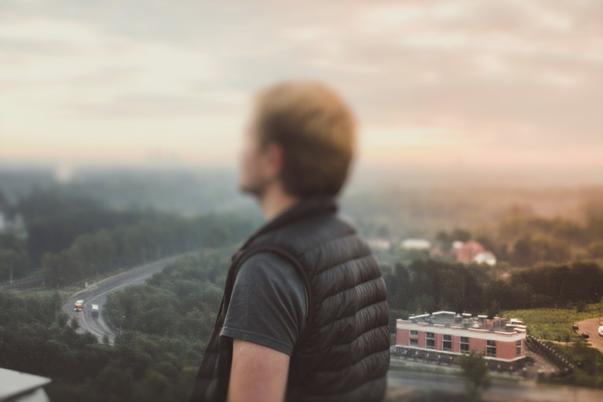
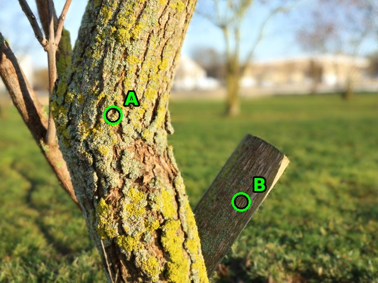

FlashReFocus
Interactive Image Refocusing in Seconds
* Equal contribution · † Corresponding author
FlashReFocus makes single-image refocusing interactive: click anywhere in a photograph to move the focal plane and turn the blur strength like an aperture ring. Each edit is rendered in about half a second and leaves everything in focus untouched, because diffusion runs only once, to restore the all-in-focus image. Refocusing is 148× faster than prior generative methods.
Ten edits while GenRefocus is 5% into its first
Played in real time. Both methods start on the same photograph; each FlashReFocus result appears after its measured time at 1536×1536 on one NVIDIA RTX PRO 6000 (2.50 s for the first refocus, 0.47 s per further edit), while GenRefocus needs 370.65 s for its first. The session is scripted and its frames are model outputs at a long side of 1024.
Refocusing paradigms and inference time. (a) Single-stage diffusion and (b) two-stage generative refocusing run a large diffusion model for every focal edit. (c) FlashReFocus restores the all-in-focus image once and renders each new focal setting explicitly. (d) Seconds per refocus at 1536×1536 on one NVIDIA RTX PRO 6000: FlashReFocus is 148.3× faster than GenRefocus and 54.5× faster than DiffCamera.

Abstract
Single-image refocusing changes the focal plane and depth of field of a photograph after capture. Users try many focal points and blur strengths on one image, so each edit should be fast and change only the blur, yet recent generative methods rerun large diffusion models for every edit. The two parts of the task differ: deblurring must recover lost detail, whereas rendering new blur is determined by depth and the focal plane. We therefore propose FlashReFocus, which runs diffusion once to restore an all-in-focus image and renders every edit with a lightweight network. For restoration, a one-step diffusion deblurrer is paired with a decoder refiner that recovers fine structures lost in VAE decoding. For rendering, a network conditioned on a defocus map from depth and the chosen focal point uses defocus-bias attention, which lets pixels with similar defocus exchange information wherever they lie; focal point and blur strength are controlled directly, and in-focus content is left untouched. Editing the map also yields tilt-shift and two focal planes without retraining. We also introduce 3CReal, a three-camera benchmark of 89 pairs. FlashReFocus achieves the best perceptual fidelity for zero-shot bokeh rendering on EBB! and 3CReal and refocuses 148.3× faster than GenRefocus, taking about half a second for each additional edit.
Method
Overview. (A) Stage I restores an all-in-focus image in one step with a frozen latent diffusion U-Net and an optional decoder refiner; (B) the weight ω mixes the pixel and detail LoRA passes to trade fidelity for detail. (C) Stage II computes a defocus map from monocular depth and the selected focal point, and (D) renders bokeh in a single feed-forward pass with (E) defocus-bias attention.

Decoder refiner. VAE decoding loses fine structure of the input. The refiner reinjects multi-scale encoder features and a high-frequency map of the blurry input into each decoder block, which recovers edges and text without another diffusion pass.

Defocus-aware renderer. Depth and the focal point give a signed defocus map; with the blur strength it conditions a residual network. Its defocus-bias attention relates pixels by how similarly defocused they are, not by how close they are in the image, so the renderer adds blur and leaves focused content as restored.

Defocus deblurring: drag to compare


Inputs from our own captures, DPDD and RealDOF at a long side of 1280, restored in one diffusion step with ω = 1.25 and the decoder refiner.
Pull focus from far to near
Each frame is one focal edit rendered from the same restored image (3CReal and RealBokeh inputs, long side 1024). Drag the focus ring to move the focal plane.
Aperture as a dial
With the focal point fixed, the strength behaves like an aperture: the background blur grows while the subject stays sharp. Strength controllability (LVCorr) is 0.857 on LFDOF and 0.839 on 3CReal, against 0.690 and 0.666 for GenRefocus. The renderer is trained for strengths 0 to 1; values from 1 to 2 extrapolate past training.
Focus sweep against GenRefocus (seconds per edit)
Both methods receive the same inputs and the same eight focal points, and our strength is set so that the background blur matches for every setting. FlashReFocus keeps in-focus regions close to the restored image; GenRefocus regenerates the image at every edit.
| Method | In-focus PSNR ↑ | In-focus LPIPS ↓ | Consistency PSNR ↑ | Seconds per edit ↓ |
|---|---|---|---|---|
| 3CReal | ||||
| GenRefocus | 28.96 | 0.155 | 43.84 | 77 |
| FlashReFocus | 44.44 | 0.036 | 49.91 | 0.10 |
| RealBokeh test | ||||
| GenRefocus | 25.38 | 0.186 | 40.19 | – |
| FlashReFocus | 38.81 | 0.048 | 49.31 | – |
Left FlashReFocus, right GenRefocus, on two 3CReal scenes and one RealBokeh scene; the 3CReal labels show the measured seconds per edit at a long side of 1024. In-focus fidelity compares each result with the all-in-focus input near the focal depth; consistency compares consecutive edits where the expected blur does not change.
Portraits
Unsplash portraits with a shallow depth of field. Stage I restores the out-of-focus background once; every view after that is one pass of the renderer on the same restored image, at strength 0.8. Switch the view to see the focus move.

Strength as an aperture
With the focus on the face, the background blur grows with the strength while the face stays sharp.

Tilt-shift
Replacing the depth given to the renderer with a vertical ramp keeps a horizontal band sharp regardless of scene depth, the miniature look of a tilted lens, again without retraining.

Two focal planes
A physical lens has one focal plane. Because the renderer reads an explicit depth map, FlashReFocus can keep two subjects at different depths sharp while the space around them stays blurred: each pixel is blurred by its distance to the nearer of the two planes, with no retraining.



Quantitative results
Cost. Wall-clock time at 1536×1536 on one NVIDIA RTX PRO 6000, including image read and write. First covers restoration and the first rendering; new focus is each further edit on the same image. † No restoration: renders directly from the input.
| Method | Params (B) | First (s) | New focus (s) | TFLOPs first | TFLOPs new | Memory (GB) |
|---|---|---|---|---|---|---|
| DiffCamera | 12.33 | 136.35 | 136.35 | 19,363 | 19,363 | 28.37 |
| GenRefocus | 18.30 | 370.65 | 217.32 | 42,031 | 24,763 | 42.82 |
| BokehDiff† | 3.83 | – | 3.43 | – | 73.4 | 11.82 |
| MagicBokeh† | 1.73 | – | 6.13 | – | 113 | 5.29 |
| FlashReFocus | 1.70 | 2.50 | 0.47 | 120 | 0.85 | 16.94 |
Zero-shot bokeh rendering. Every method receives the same all-in-focus input and focal point. 3CReal contains 89 small-/large-aperture pairs from three camera and lens systems unseen in training. LVCorr is measured on LFDOF for the EBB! block.
| Method | PSNR ↑ | SSIM ↑ | LPIPS ↓ | CLIP-I ↑ | LVCorr ↑ |
|---|---|---|---|---|---|
| EBB! Val176 | |||||
| GenRefocus | 23.80 | 0.868 | 0.2025 | 0.964 | 0.690 |
| MagicBokeh | 23.14 | 0.844 | 0.2398 | 0.933 | 0.799 |
| FlashReFocus | 24.52 | 0.892 | 0.1805 | 0.973 | 0.857 |
| 3CReal | |||||
| GenRefocus | 26.38 | 0.853 | 0.2426 | 0.972 | 0.666 |
| MagicBokeh | 25.64 | 0.833 | 0.2543 | 0.943 | 0.759 |
| FlashReFocus | 27.98 | 0.886 | 0.2178 | 0.981 | 0.839 |
| Defocus deblurring (LPIPS ↓) | DPDD | RealDOF |
|---|---|---|
| Restormer | 0.1762 | 0.2863 |
| GenRefocus | 0.1686 | 0.2447 |
| FlashReFocus + refiner | 0.1557 | 0.2437 |
Excerpts of the paper's tables; the full tables compare nine bokeh-rendering methods and add RealBokeh validation and MODEST.
Related work
FlashReFocus builds on and compares with these works on refocusing and bokeh rendering.
BibTeX
@misc{cheng2026flashrefocus,
title = {FlashReFocus: Interactive Image Refocusing in Seconds},
author = {Cheng, Ching-Heng and Lee, Chia-Ming and Chang, Ming-Ching and
Li, Xin and Liu, Yu-Lun and Hsu, Chih-Chung},
year = {2026}
}